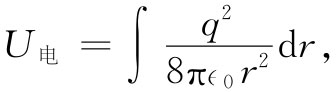
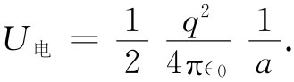
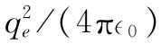
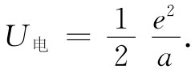

在把相对论和麦克斯韦方程结合在一起的过程中，我们完成了关于电磁理论的主要工作。当然，有某些细节我们曾经漏掉，还有一个以后将会涉及的广阔领域——电磁场与实物的相互作用。但现在却要稍微停留一下以便向你们指明，这座崇高大厦尽管在解释那么多现象方面是多么美妙和成功，但最终不得不脸朝下倒了下去。当你追随任一项物理学太远时，总会发现它将碰到某种困难。现在就要来讨论一个严重的困难——经典电磁理论的失败。你可能意识到，由于量子力学效应，使得全部经典物理学都失败了。经典力学是一种在数学上协调一致的理论，它只是与经验不符而已。然而，很有趣，电磁学的经典理论就其本身而言已经是一种不能令人满意的理论。有一些困难与麦克斯韦理论的概念 联系在一起，但这困难却不是量子力学所能解决或与之直接有关的。你可能会说：“为这些困难操心也许没有什么用处，既然量子力学正在对电动力学定律进行修改，应该等修正之后再看看还有什么困难。”然而，当电动力学被结合到量子力学时，那些困难却依然存在。因此，现在来考察这些困难到底是什么并不是浪费时间。何况，这些困难还有巨大的历史价值。此外，从能够跟踪理论足够远去了解每件事——包括它的一切困难——你可能会得到某种成就感。
当把电磁理论应用于电子或其他带电粒子时，我们所谈论的困难与电磁动量和能量的概念有关。结构单一的带电粒子和电磁场的概念在有些方面是互相矛盾的。为了描述这些困难，我们从做一些能量和动量概念方面的练习开始。
首先，将计算一个带电粒子的能量。假设采取一个简单的电子模型，其中全部电荷q都均匀分布在一个半径为a的球面上，对于点电荷的特殊情况，a可取为零。现在让我们计算电磁场中的能量。如果该电荷静止不动，就不会有磁场，则每单位体积的能量正比于电场的平方。电场的大小为q/（4π∈0 r2 ），其能量密度即是
要获得总能量，就得将这个密度对全部空间积分。利用体积元4πr2 dr，我们把U电 称为总能量，它为

这很容易积出。由于下限为a而上限为∞，因而
 （28.1）
如果用电子电荷qe 来代替q而用符号e2 来代替 ，则
 （28.2）
这全都很好，直到对于一个点电荷我们令a趋于零——才存在巨大困难。由于场的能量密度与离中心距离的四次幂成反比，所以它的体积分为无限大。在一个点电荷的周围的场中竟有无限大的能量。
一个无限大能量有什么不妥之处呢？如果能量不能跑出去，而必定永远保持在那里，则一个无限大能量是否会带来任何真正的困难？当然，出现无限大的量可能会使人烦躁不安，但真正要紧的却是究竟有无任何可观测得到 的物理效应。为回答这一问题，我们应当转到能量以外的其他事情上去。假定我们问起当移动 电荷时能量怎样变化 。那时，如果变化 为无限大，则我们便将陷入困难之中了。